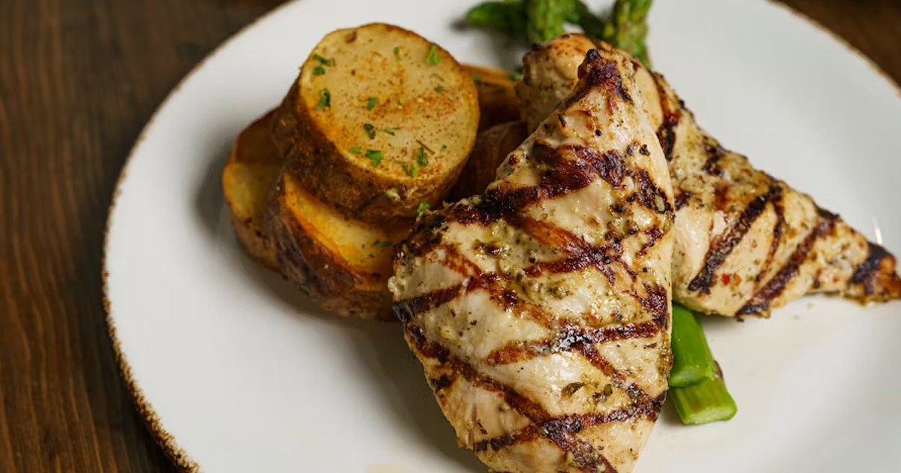

Grilled Chicken

Description
An often underrated, yet healthy meal option, is grilled chicken! This recipe uses a nice marmalade that will enhance this lean meat. Great for when you're looking for healthier options.
Ingredients
- 1/4 cup red wine vinegar
- 1/4 cup low-sodium soy sauce
- 1/4 cup olive oil
- 1 1/4 teaspoon dried parsley flakes
- 1/2 teaspoon dried basil
- 1/2 teaspoon dried oregano
- 1/4 teaspoon garlic powder
- 1/4 teaspoon ground black pepper
- 6 skinless, boneless chicken breasts
Steps
- Whisk red wine vinegar, soy sauce, olive oil, parsley, basil, oregano, garlic powder, and black pepper in a bowl
- Place chicken breasts in a zipper lock bag. Pour mixture in, ensuring chicken breasts are coated. Press out remaining air, seal the bag, and store in the firdge for 2 to 4 hours.
- Preheat grill at medium-low heat and lightly oil grate.
- Remove each chicken breast from the marmalade and place on the grill.
- Grill chicken on each side for 4 to 5 minu 5-6 minutes; a thermometer should read at least 165 degrees.
- Remove from grill and serve hot with asparagus, potatoes, or anything else you
Home